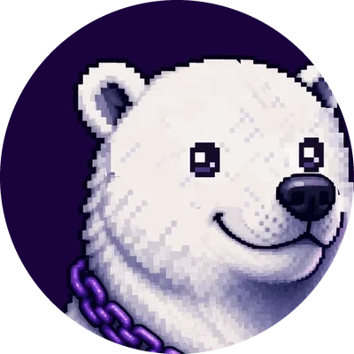

MiloBig feeling? Brave step.
Milo is a polar bear for kids 6–12. In about a minute he helps a child name the feeling, breathe with him, then pick one small brave thing to go and do.
One minute with Milo.
Feelings show up as weather in Milo’s world. Name it, breathe it, then take one step up the brave ladder.
- Name it
- Breathe
- Brave step
What’s the feeling?
Breathe with Milo
In for 4, hold for 2, out for 6. One round here; the concept app does three.
Pick one brave step
Small, real, today.
That’s the minute.
Feeling named. One breath taken. One brave step picked, to do for real, off the screen.
An interactive sketch of the concept, not the app.
Borrowed from child psychology.
Three ideas with research behind them. Tap a card for the source.
Sources: Lieberman 2007 · Zhu 2026 · James 2020 · Peris 2015 · Kramer 2023 · Martin & Oliver 2019
A concept, not therapy. Milo is not a treatment, a diagnosis or a crisis service, and makes no clinical claims. Its words have not been reviewed by a clinician yet; that review comes before any child uses it.
White bear. Night sky. Aurora light.
The character · tap him
CalmColour · tap to copy
Type
What’s the feeling?
Poppins MediumOne brave step at a time.
Milo is a concept in development. Character, brand and core loop by 3Shamrocks Studio.